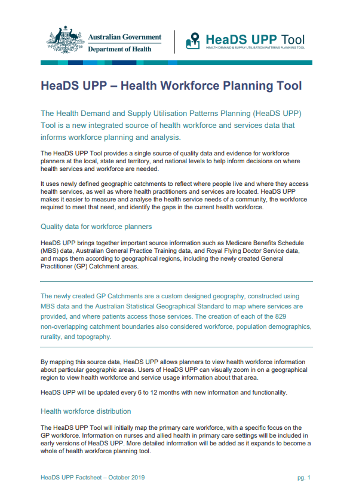

Health Workforce Data
Welcome to the Department’s Health Workforce Data website. This website and integrated Health workforce data tool provide access to reports and summary tables for the health workforce in Australia.
Data Tool
Health workforce and MET data tool
Develop your own tables and graphs and export the data for further analysis
Publications
Health workforce publications including:
- Australia’s Future Health Workforce reports
- Factsheets
Datasets
Information about datasets including the health workforce datasets that are available and information on historical datasets.
Datasets
HeaDS UPP
